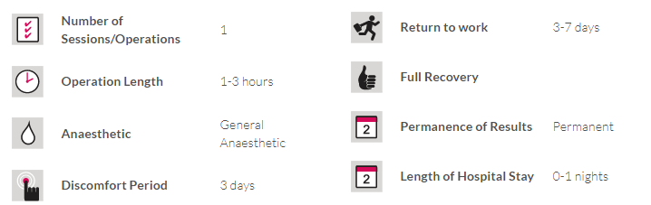

Nasal Aesthetics
Nasal Aesthetics
TREATMENT SUMMARY
Every person wants to have the most beautiful face and body, especially women. Beauty and attractiveness first begin with the face. When seen from across, the perfect face for a woman is one where facial structure, the nose, eyes, and ears are proportional to each other. It is for these reasons that nasal aesthetics are one of the most considered and preferred facial aesthetic operations. Having a perfect nose that most perfectly suits the face is one of everyone’s desires. One of the most important requirements is ensuring that the face’s profile is natural while not disrupting the totality of your face’s expressions.
The nasal aesthetic operation, known as a rhinoplasty in the medical world, is the reshaping of the nose. Procedures such as nasal reductions, enlargements, tip lifts and removal of the nasal bone (deviation) can be carried out.
Reasons to Have a Nasal Aesthetic Operation
There is two main reasons for choosing to have a Nasal Aesthetic Operation:
1. HEALTH REASONS: This operation is recommended for those who, due to genetic/birth defects, various diseases or blows, have difficulty breathing, have a blocked or broken nose, have difficulty speaking, snore loudly or have complaints about smelling/not being able to smell.
2. AESTHETIC REASONS: The nasal aesthetics operation (rhinoplasty) is a surgical intervention done for the creation of a pleasing nose from an aesthetical perspective by correcting areas the patient is displeased by and, at the same time, the correction of breathing difficulties through the nose should there be any. This procedure is one of the most frequently performed procedures. Procedures that can be performed include removing high nose bridges and crookedness, tip lifts, nose wing reductions and correcting curvatures in the septum, the cartilage that separates the two nostrils and others.
Things to Pay Attention to Pre-Surgery
A patent who wishes to undergo a nasal aesthetic operation should clearly and precisely explain to his/her doctor what kind of nose they would like and, if need be, provide a photographic example.
Before the operation, the patient’s photograph is taken and the desired look is created on the computer for the patient’s approval. This way, the patient will also learn the course of the operation and of the techniques that will be employed.
Minimum Age
Nasal aesthetic operations can be carried out on ladies 17 years of age onwards, and from 18 years of age for gentlemen.
Operation Methods
Two types of methods, open and closed, exist for the nasal aesthetic operation. The method to be used is determined by your doctor before the operation while the decision on what changes are to be made are being discussed with the patient.
Type of Anaesthesia and Operation Length
Nasal surgery carried out in a hospital environment is performed under general anesthetic. The length of the procedure varies between 1-3 hours. Once the operation has been completed, a silicon padding is placed in the nose and plaster on the nose bridge. This is done to reduce post-operation swelling as well as to reinforce the nose’s new structure and allow it to settle while it heals.
The patient is released a day after the operation. The silicone padding is removed 3-6 days later. Patients who have undergone an open rhinoplasty procedure have their stitches removed 6-7 days after the operation whereas the plaster is removed after 7-8 days.
Recovery Period
Bruising and swelling can occur around the patient’s eyes immediately following the operation due to bleeding during the operation and the patient’s own skin type. This is completely normal, and such bruising and swelling will disappear gradually within approximately 2 weeks. It takes between 6 months to 1 year for the nose to completely heal.
Things to Pay Attention to Post-Surgery
- The shield and bandaging placed on the nose must stay in place for at least a week and not get wet.
- You must not bathe and must avoid steamy places.
- The nose’s skin must be cleaned with a special lotion once the bandaging is removed.
- Intensive sports and physical exercise must be avoided.
- Teeth much are brushed very carefully for the first 2 weeks.
- Extreme facial movements (gestures) should be avoided for 1 week.
- Contact lenses must not be worn for 5 days.
- It is necessary not to roughly touch the nose which will be sensitive for 4 weeks and to protect it from blows.
- Glasses must not be worn for at least 2 months.
- As harmful rays harm your skin, sunlight and solariums must be avoided.